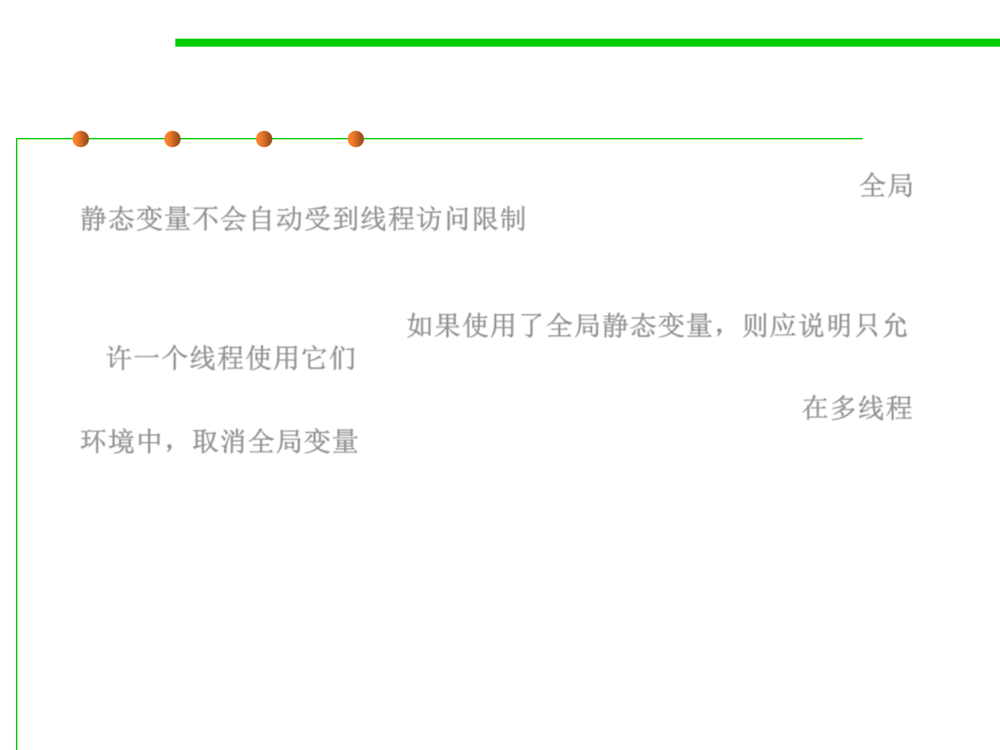

Avoid Global Variables
10.1 Concurrency and Thread-Safety
▪ Global static variables are not automatically thread confined. 全局
静态变量不会自动受到线程访问限制
– If you have static variables in your program, then you have to make an
argument that only one thread will ever use them, and you have to
document that fact clearly. 如果使用了全局静态变量，则应说明只允
许一个线程使用它们
▪ Better, you should eliminate the static variables entirely. 在多线程
环境中，取消全局变量